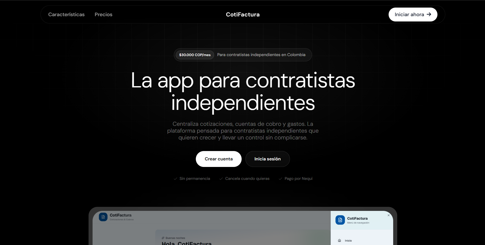
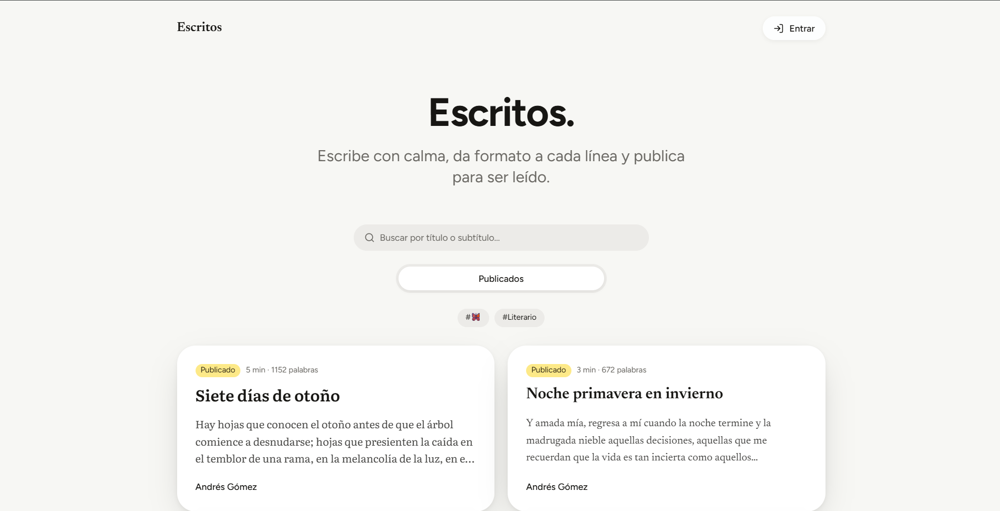
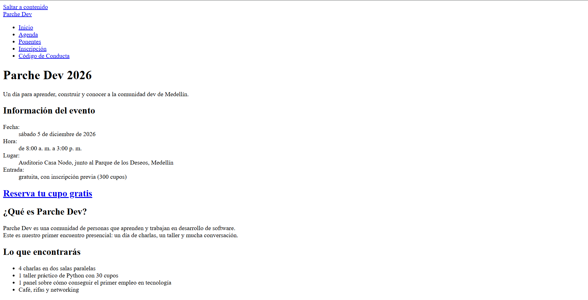

Cotifactura
Plataforma que centraliza cotizaciones, cuentas de cobro y gastos. La plataforma está desarrollada con React, Tailwind, Typescript, supabase y desplegada en vercel.
Ver en vivoLo que he construido y lo que he practicado.

Plataforma que centraliza cotizaciones, cuentas de cobro y gastos. La plataforma está desarrollada con React, Tailwind, Typescript, supabase y desplegada en vercel.
Ver en vivo
Aplicación web pensada y desarrollada para escritores; su stack TanStack Start (SSR), React + TypeScript, Tailwind CSS y Supabase.
Ver en vivo
Proyecto desarrollado en clase donde construí una página web para una comunidad de desarrolladores. Practiqué HTML semántico, organización de secciones y estilos con CSS.
Ver en vivo